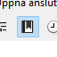
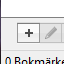
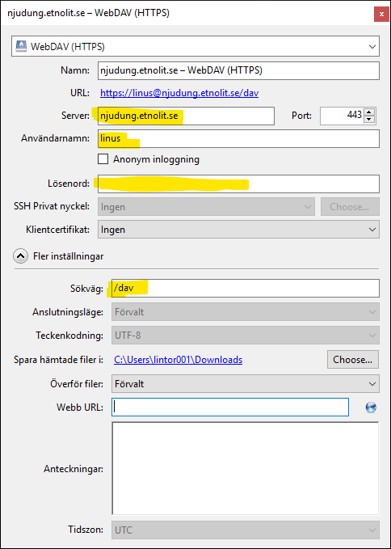
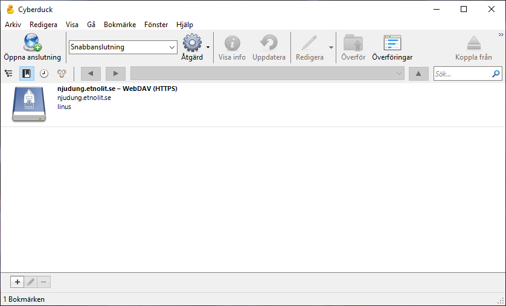
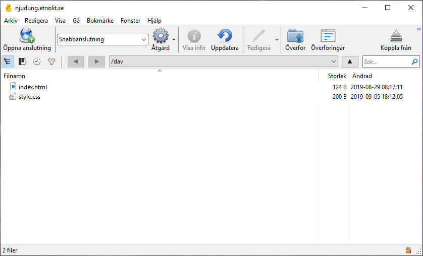

Välkommen till Teknikprogrammets webbserver på Njudungsgymnasiet. Denna server används för kursen Webbutveckling 1.
Sökväg till personlig sajt
För att besöka din sida använder du adressen https://njudung.etnolit.se/~namn/ där du byter ut
namn mot ditt användarnamn.
Ladda upp filer
För att komma igång med uppladdning av dina filer behöver du ett program som kan prata WebDAV. Ett sådant program är Cyberduck. För att komma igång kan du följa instruktionerna nedan.
Videoinstruktion
Här är en videoinstruktion där du ser hur du kan komma igång med Cyberduck.
Instruktion
Följande instruktioner är samma som det som visades i videon ovan.
-
Ladda hem och installera Cyberduck. Det är gratis att använda.
-
 När du öppnat Cyberduck växlar du till Bokmärken.
-
 I nederkant till vänster hittar du knappen för Nytt bokmärke.
-
Välj WebDAV (HTTPS) och fyll i panelen med server (njudung.etnolit.se) och sökväg (/dav) som du hittar under fler inställningar.
Använd det användarnamn och lösenord som du fått av din lärare.
 -
Panelen Bokmärken kommer nu innehålla ett nytt bokmärke. När du dubbelklickar på detta ansluter Cyberduck till servern.
 -
Om allt fungerat som det ska ser du nu en listning av de filer som finns i din mapp på servern.
